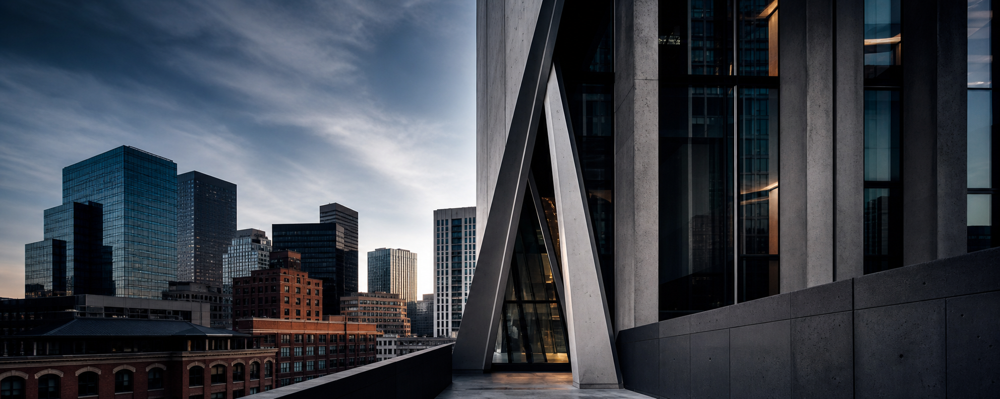
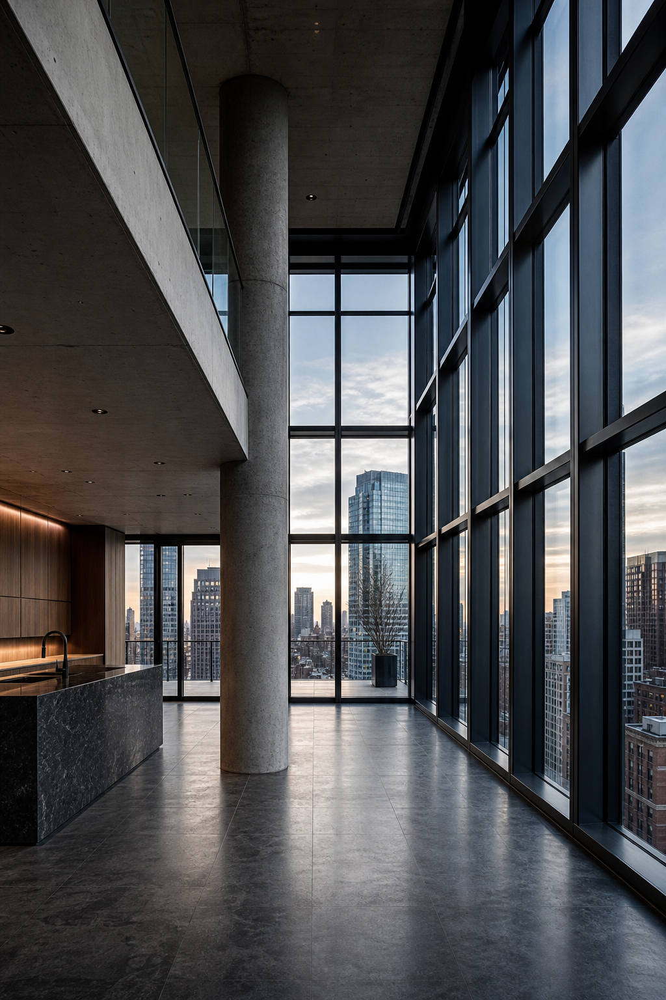

Perspective, Defined
From Seaport glass to Back Bay brick, the work emphasizes volume, luminance, material fidelity, and structural geometry.
Residential
Geometry

Luxe
Forms
Spaces
Precision
Composition locked to lines, materials, and architectural intent.
Luminance
Light shaped to clarify space, volume, and finish.
Structure
Strong geometry for commercial, real estate, and editorial use.
Fidelity
Clean delivery for listings, portfolios, campaigns, and publications.